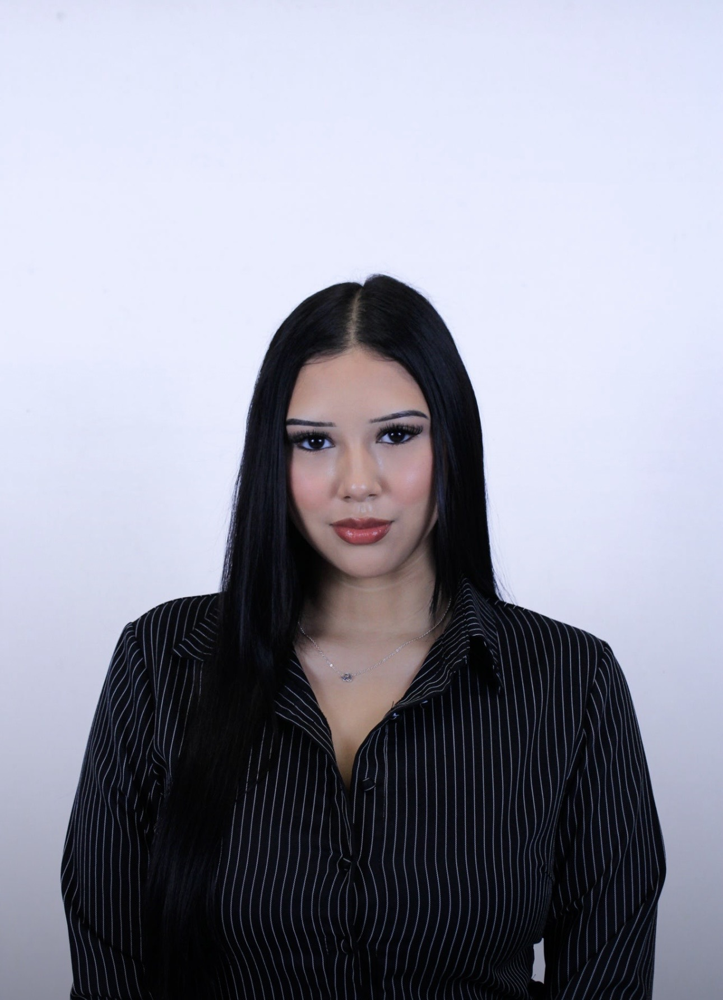
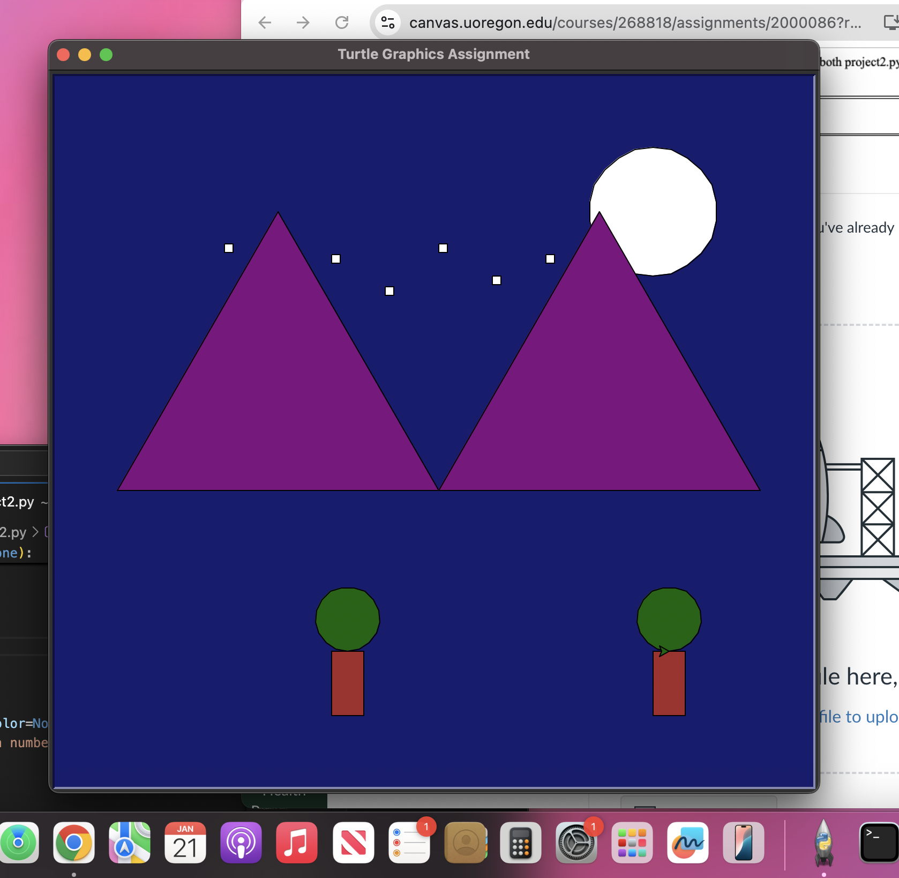
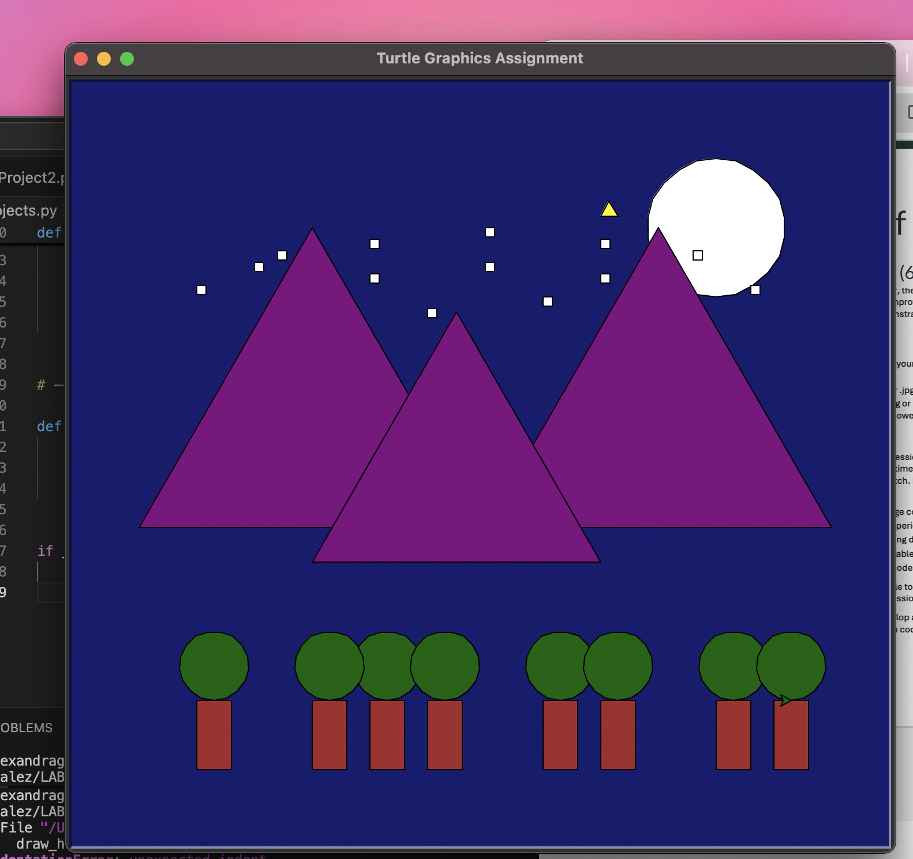
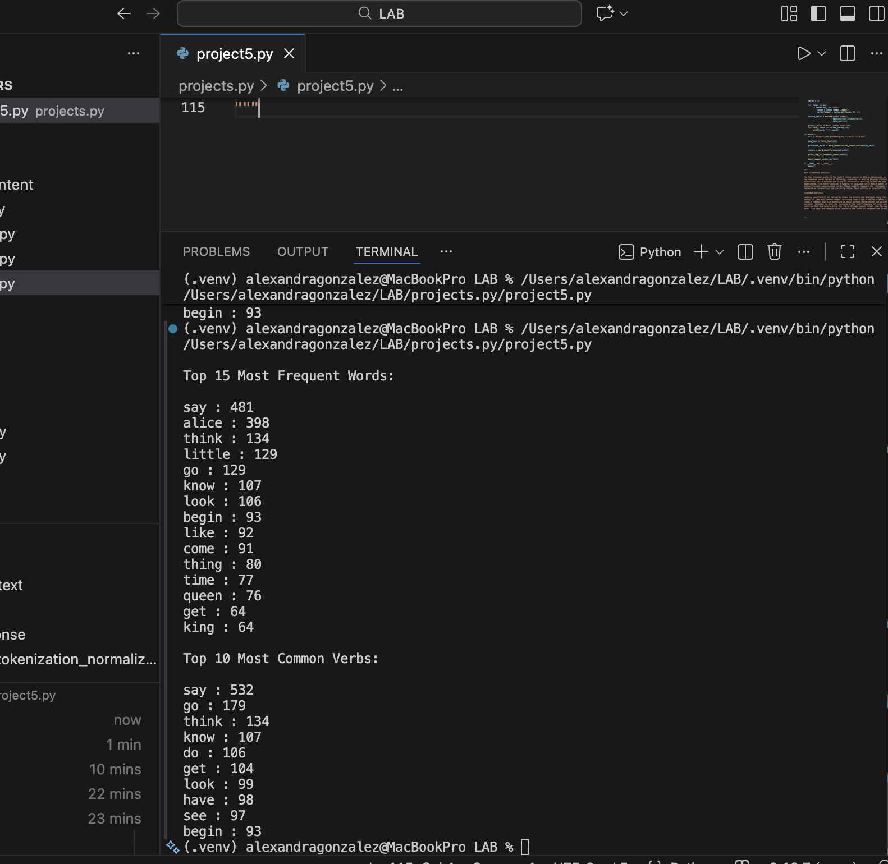

Email: alexgonz@uoregon.edu
University: University of Oregon
LinkedIn: linkedin.com/in/alexagonza29

Hello! My name is Alexandra Gonzalez and I am a sophomore at the University of Oregon studying Advertising with a minor in Business. I am interested in the intersection of creativity, storytelling, and emerging technologies like artificial intelligence.
I enjoy exploring how creative ideas and strategic thinking come together in advertising and media. Through my classes and experiences, I continue to develop my communication, leadership, and problem-solving skills while learning how storytelling can connect brands with audiences.
I am always excited to explore new ideas and challenge myself through creative projects and collaborative work.
University of Oregon
Advertising Major, Business Minor
Sophomore
Expected Graduation: June 2028
My studies focus on communication, media strategy, and creative storytelling. I am especially interested in how advertising and media continue to evolve with new technologies and digital platforms.
I hope to continue developing my skills in advertising, communication, and creative storytelling during my time at the University of Oregon. I am particularly interested in learning more about how artificial intelligence and new technologies are shaping the future of media and marketing.
In the future, I would like to work in a field that combines creativity, strategy, and storytelling to help brands connect with audiences in meaningful ways.
In this project, I created a graphical scene using Python's Turtle graphics module. I used starter code functions and shape-building functions to design a cohesive scene with multiple elements, colors, and positioning.

In this project, I improved my Turtle graphics scene by refactoring the code into smaller helper functions. This made the program more organized, reusable, and easier to maintain while creating a more detailed scene.

In this project, I used Python to process text and analyze word frequency. The program identified the top 15 most frequent words and included an extended analysis of the text.
